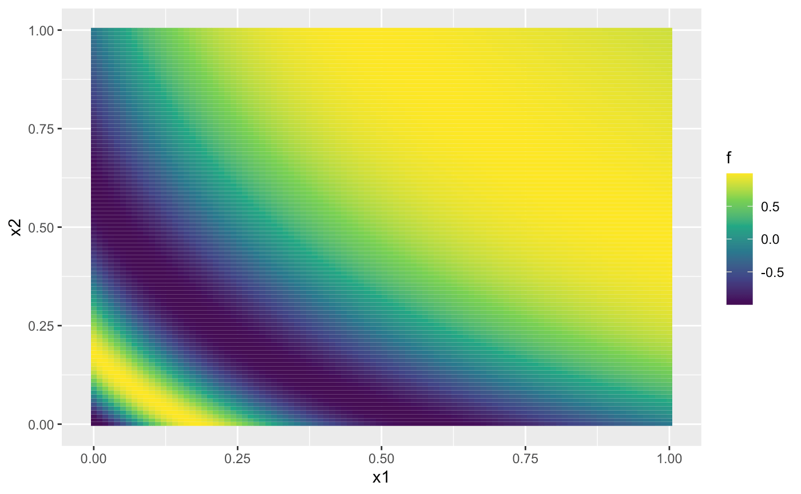

This vignette shows how to use dgpsi to sequentially
enrich a design for adaptive improvement and pruning of an emulator. We
choose a DGP for this example, but the methods work equally well on all
types of emulator.
Construct a synthetic simulator
We consider a non-stationary synthetic simulator which has a 2-dimensional input with the functional form (Ba and Joseph 2018) defined by:
f <- function(x) {
sin(1/((0.7*x[,1,drop=F]+0.3)*(0.7*x[,2,drop=F]+0.3)))
}Note that to provide the simulator for the sequential design below,
we have defined the above function such that its input x
and output are both matrices. The commands below generate the contour of
the function:
x1 <- seq(0, 1, length.out = 100)
x2 <- seq(0, 1, length.out = 100)
dat <- expand_grid(x1 = x1, x2 = x2)
dat <- mutate(dat, f = f(cbind(x1, x2)))
ggplot(dat, aes(x1, x2, fill = f)) + geom_tile() +
scale_fill_continuous(type = "viridis")
We can see from the figure above that the synthetic simulator exhibits more fluctuations on the bottom left of its input space while in the top-right part, the simulator shows little variation.
We now specify a seed with set_seed() for
reproducibility
set_seed(999)and generate an initial design with 5 design points using the maximin Latin hypercube sampler:
X <- maximinLHS(5,2)
Y <- f(X)To track the qualities of constructed emulators during sequential design, we generate a validation dataset:
validate_x <- maximinLHS(200,2)
validate_y <- f(validate_x)DGP emulation with sequential designs
To start with the sequential design, we initialize a two-layered DGP emulator (with 2 GP nodes in the first layer and 1 GP node in the second layer) using the generated initial design:
m <- dgp(X, Y)## Auto-generating a 2-layered DGP structure ... done
## Initializing the DGP emulator ... done
## Training the DGP emulator:
## Iteration 500: Layer 2: 100%|██████████| 500/500 [00:01<00:00, 353.90it/s]
## Imputing ... doneWe then specify the boundaries of the input parameter space for
f so that the sequential design can restrict its search for
new points.
The limits of the input parameters are defined as a matrix with each
row giving the lower and upper limits of an input parameter. After the
boundaries are specified, we are ready to conduct a sequential design
that adaptively improve the emulator, m, via
design(). The function design() provides a
simple and flexible implementation of sequential design for emulation.
In this vignette, we only demonstrate its basic usage and refer users to
?design for more advanced specification, e.g., on
checkpoints to manually control the design progress and on schedules to
re-fit and validate emulators.
For illustrative purpose, we implement two waves of sequential design
on m:
# 1st wave with 25 steps
m <- design(m, N = 25, limits = lim, f = f, x_test = validate_x, y_test = validate_y)## Initializing ... done
## * RMSE: 0.487293
## Iteration 1:
## - Locating ... done
## * Next design point: 0.620583 1.000000
## - Updating and re-fitting ... done
## - Validating ... done
## * RMSE: 0.388907
##
## ...
##
## Iteration 18:
## - Locating ... done
## * Next design point: 0.198164 0.195029
## - Updating and re-fitting ... done
## - Pruning 1 node(s) in layer 1 ... done
## - Re-fitting ... done
## - Validating ... done
## * RMSE: 0.052264
##
## ...
##
## Iteration 25:
## - Locating ... done
## * Next design point: 0.248474 0.034358
## - Updating and re-fitting ... done
## - Validating ... done
## * RMSE: 0.016924After the first wave we see that 1 GP node is removed from the first layer by automatic pruning of the DGP which leaves only one node in both the first and second layer of the DGP hierarchy respectively. This helps accelerate the inference of the DGP emulator in subsequent waves of the sequential design while maintaining accuracy. We now start the second wave of the sequential design:
# 2nd wave with 10 steps
m <- design(m, N = 10, limits = lim, f = f, x_test = validate_x, y_test = validate_y)## Initializing ... done
## * RMSE: 0.016924
## Iteration 1:
## - Locating ... done
## * Next design point: 0.092643 0.352432
## - Updating and re-fitting ... done
## - Validating ... done
## * RMSE: 0.013484
##
## ...
##
## Iteration 10:
## - Locating ... done
## * Next design point: 0.901510 0.989878
## - Updating and re-fitting ... done
## - Validating ... done
## * RMSE: 0.007114Finally, we resume the second wave with 10 additional iterations:
# 2nd wave with 10 additional steps
m <- design(m, N = 10, limits = lim, f = f, x_test = validate_x, y_test = validate_y, new_wave = FALSE)## Iteration 11:
## - Locating ... done
## * Next design point: 0.016562 0.966263
## - Updating and re-fitting ... done
## - Validating ... done
## * RMSE: 0.005308
##
## ...
##
## Iteration 20:
## - Locating ... done
## * Next design point: 0.982806 0.438261
## - Updating and re-fitting ... done
## - Validating ... done
## * RMSE: 0.002383Resuming rather than adding an additional wave can be a useful
feature, particularly for plotting using draw(). After the
sequential design is done, we can inspect the enriched design by
applying draw() to m:
draw(m, 'design') It can be
seen from the figure above that most of the added design points
concentrate at the bottom-left corner of the input space where the
simulator
It can be
seen from the figure above that most of the added design points
concentrate at the bottom-left corner of the input space where the
simulator f exhibits more variation and thus needs more
data to be well-emulated. We can also visualize the improvement to RMSE
during the sequential design:
draw(m, 'rmse')
Comparison to DGP emulators with space-filling designs
We build four DGP emulators with static space-filling Latin hypercube designs (LHD) of size 10, 20, 30, 40, and 50 respectively:
# DGP emulator with a LHD of size 10
X1 <- maximinLHS(10,2)
Y1 <- f(X1)
m1 <- dgp(X1, Y1, verb = F)
# DGP emulator with a LHD of size 20
X2 <- maximinLHS(20,2)
Y2 <- f(X2)
m2 <- dgp(X2, Y2, verb = F)
# DGP emulator with a LHD of size 30
X3 <- maximinLHS(30,2)
Y3 <- f(X3)
m3 <- dgp(X3, Y3, verb = F)
# DGP emulator with a LHD of size 40
X4 <- maximinLHS(40,2)
Y4 <- f(X4)
m4 <- dgp(X4, Y4, verb = F)
# DGP emulator with a LHD of size 50
X5 <- maximinLHS(50,2)
Y5 <- f(X5)
m5 <- dgp(X5, Y5, verb = F)We then extract their RMSEs
# validation of the DGP emulator with the LHD of size 10
m1 <- validate(m1, x_test = validate_x, y_test = validate_y, verb = F)
rmse1 <- m1$oos$rmse
# validation of the DGP emulator with the LHD of size 20
m2 <- validate(m2, x_test = validate_x, y_test = validate_y, verb = F)
rmse2 <- m2$oos$rmse
# validation of the DGP emulator with the LHD of size 30
m3 <- validate(m3, x_test = validate_x, y_test = validate_y, verb = F)
rmse3 <- m3$oos$rmse
# validation of the DGP emulator with the LHD of size 40
m4 <- validate(m4, x_test = validate_x, y_test = validate_y, verb = F)
rmse4 <- m4$oos$rmse
# validation of the DGP emulator with the LHD of size 50
m5 <- validate(m5, x_test = validate_x, y_test = validate_y, verb = F)
rmse5 <- m5$oos$rmse
# create a dataframe that stores the RMSEs of the four DGP emulators
rmse_static <- data.frame('N' = c(10, 20, 30, 40, 50), 'rmse' = c(rmse1, rmse2, rmse3, rmse4, rmse5), 'LHD' = c('lhd-10', 'lhd-20', 'lhd-30', 'lhd-40', 'lhd-50'))and add them to the sequential design validation plot (in log-scale) for comparison:
draw(m, 'rmse', log = T) +
geom_point(data = rmse_static, mapping = aes(x = N, y = rmse, group = LHD, shape = LHD), color = '#E69F00', size = 1.5) +
scale_shape_manual(values = c(2, 3, 4, 8, 15))
It can be seen from the plot above that with static space-filling designs, the quality of an emulator may not be improved as the design size increases. This is because increasing the size of a space-filling design may not capture regions where the simulator exhibits more variation, and thus cause emulators with higher RMSEs than those constructed through sequential design.
See also
See Sequential Design II for the sequential design of a bundle of DGP emulators with automatic terminations.